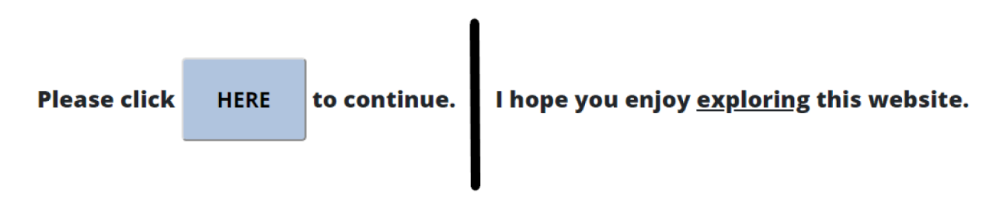
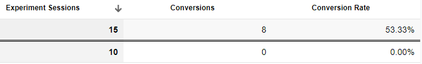
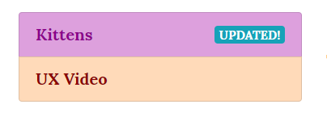
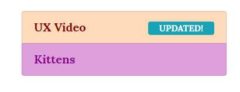
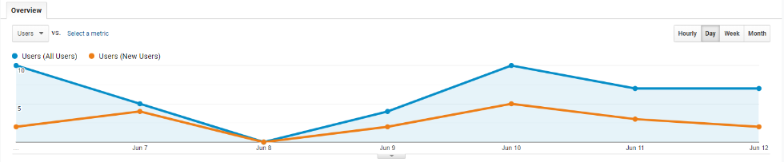
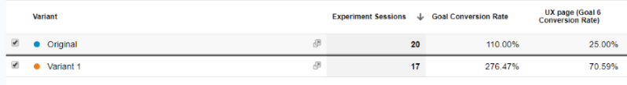
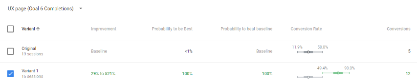
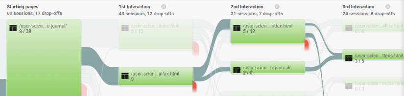

Content Experiment 1
For my last experiment (post 9), I set up an A/B test using Google Optimize to compare using a large button with clear directions to click "here", to a mysterious link within a sentence.
 Button on original version vs. link on variant
This experiment ran for three days. Not surprisingly, the Optimize Objective report results identified the button as being 100% more likely to succeed in moving users to the target page.
The Google Analytics Report showed 0 conversions for the Variant.
 Analytics report for Experiment 1Content Experiment 2
I also tried another experiment and ran it for six days. For this A/B experiment, I added an "updated" badge to the top button on my home page.
 Button on original versionFor the variant, I switched the order of the buttons.
 Button on variantCall for Clicks
I put out some requests for people to check out my website. The audience report showed some new users.
 Analytics Audience reportObjectives
Page destination goal: UX Page
My hypothesis was that users would click on the top button no matter which version they saw, and the badge would help keep the focus on the top button no matter what the expected content was.
The Analytics report for the destination goal of the UX page shows the Variant with the UX button on top outperforming the Original.
 Analytics report for UX page goalThe Optimize Improvement Overview report shows the Variant to be 100% more likely to move users to the UX Page. 5 out of 19 users who saw the Original made their way to the UX page eventually.
 Optimize report for UX page goalDestination: Kittens Page
I also was curious if users who went to the UX Page from the Home page would find their way to the Kittens page. Presumably they noticed the Kittens button; would they be interested enough to find their way back? The Analytics Behavior Flow report seems to indicate that some did.
9 users who started at the Home page and moved to the UX Page returned to the Home page. 3 of these Users checked out the Kittens page.
 Analytics behavior flow reportConclusions
You are probably wondering why I didn't set up goals for button clicks for the UX Video and Kittens buttons. I wonder that too. That would have been an easier way to capture the information I was really after and I'm kicking myself now. The way I set things up, the data shows if users eventually ended up on the highlighted page, but not necessarily how they got there.
If I were to continue with this experiment, I would set up button click goals and funnel goals.
I also wonder if there are too many variables with my experiment and if adding an "updated" badge vs. no badge would have been a better test. Also, are there some users who will be drawn to kittens no matter what?
The Analytics and Optimize tools combined are very useful for monitoring website use, and testing proposed changes. Analytics is a robust tool for studying how users are navigating and interacting with a website. The goals feature in Analytics is beneficial for pinpointing expected or desired interactions and then analyzing how successful the site is in getting users to interact as expected. If goals are not being met or a new goal is proposed, Optimize can be used to test various ways to increase goals and conversions before committing to a change.
Care of Users
It seems very easy for developers to manipulate users through less ethical means in order to obtain conversions. We've all visited websites where it was difficult not to click on ads by mistake while trying to navigate through an article. So far, I have not been enticed to buy whatever product I've been shown when this happens. I see now that the goal could be just to get those clicks even if it doesn't lead to sales. It is really easy to lose users' trust by taking them to unexpected places.
I thought it was important to add a video to the UX page and photos to the Kittens page of my journal for my second experiment so that these pages really were "updated" for any returning users.